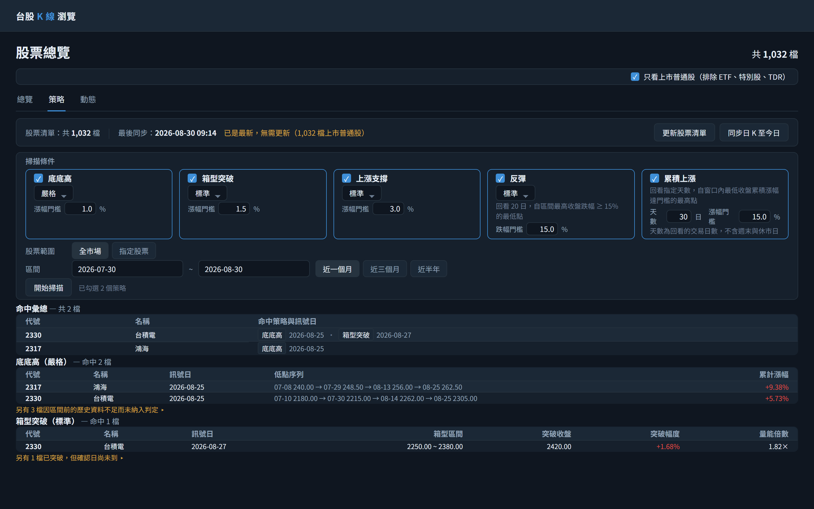

1初始畫面：股票清單只有開發種子的 34 檔，尚未同步。此時直接按同步只會補這 34 檔的行情，掃描範圍也就只有 34 檔——所以第一步是先按「更新股票清單」。
GET
/api/strategies取策略清單與三段靈敏度的說明文字GET
/api/stocks/sync/progress?jobType=PRICE_BACKFILL取 lastSyncedAt 顯示最後同步時間GET
/api/stocks?page=1&size=1只取 total 顯示「共 34 檔」
2點擊「更新股票清單」：一次動作同時匯入全體上市普通股與交易所官方產業別，摘要顯示「共 1,032 檔（新增 998、更新 34）・產業別 29 類，未分類 17 檔」，常駐檔數同步更新。此步驟只寫股票主檔與產業別，完全不抓行情。
POST
/api/stocks/universe/import無 body；此端點即是向交易所抓取上市股票清單的起點，同時匯入官方產業別，回應的 totalActiveCount／insertedCount／updatedCount／industryCount／uncategorizedStockCount 組成摘要GET
/api/stocks?page=1&size=1匯入完成後重取 total 更新「共 N 檔」
3點擊「同步日 K 至今日」：母體是 1,032 檔上市普通股（沿用頁籤列上方「只看上市普通股」的預設勾選），同步轉為執行中並顯示 18 / 1,032 進度，畫面不被阻塞；此時仍可再按「更新股票清單」，兩顆按鈕互不阻擋。
POST
/api/stocks/sync/backfillbody startDate=2026-01-01, endDate=2026-08-30, catchUp=true, commonStocksOnly=true（取自頁面層級勾選框），不帶 stockIds 代表全市場；此端點即是向 Yahoo／FinMind 逐檔抓取歷史日 K 的起點，8 檔並行GET
/api/stocks/sync/progress?jobType=PRICE_BACKFILL每 5 秒輪詢更新進度
4同步完成，最後同步時間更新為 2026-08-30 09:14、完成 1,032 檔上市普通股（摘要說明母體，避免與常駐的「共 N 檔」對不起來）；勾選五個策略，前四張卡片各自選靈敏度、門檻依所選靈敏度帶入預設值後可再自行輸入（反彈那格是「跌幅門檻」）；累積上漲沒有靈敏度下拉，改為自己填「天數」與「漲幅門檻」兩格，這裡把天數從預設的 20 改成 30 日。頁籤列上方的「只看上市普通股」為預設勾選，三個分頁共用。
GET
/api/stocks/sync/progress?jobType=PRICE_BACKFILL同步完成後重取 lastSyncedAt
5點擊「開始掃描」：結果區最上方是聯集表格「命中彙總 — 共 5 檔」，同時命中兩個策略的 2330 在同一列逐一列出各策略的訊號日；其下依勾選順序是各策略區塊。畫面一次放不下五個區塊，其餘三個在下方（見次格）。
POST
/api/strategies/scanbody strategies=[底底高/STRICT/risePercent=1.0, 箱型突破/STANDARD/risePercent=1.5, 上漲支撐/STANDARD/risePercent=3.0, 反彈/STANDARD/risePercent=15.0, 累積上漲/days=30/risePercent=15.0（不帶 preset）], commonStocksOnly=true, startDate=2026-07-30, endDate=2026-08-30，不帶 stockIds 代表全市場
6同一份掃描結果向下捲動：上漲支撐，以及反彈與累積上漲兩個新型態的區塊。後兩者都以「高點→低點」或「低點→高點」的幅度命中，訊號日即該段的端點；累積上漲區塊的標題括號寫的是這次實際採用的天數（30 日），取自回應而非畫面上的輸入值；最右的「分 K」連結導向該檔該日的分 K 圖，供自行判讀當日盤中走勢。這兩個新型態不做事後確認，因此沒有待確認提示。

7再次點擊「同步日 K 至今日」：1,032 檔皆已補齊至今日，未發出任何外部請求，摘要顯示「已是最新，無需更新（1,032 檔上市普通股）」而非「完成 1,032 檔」；掃描結果保留不受影響。
POST
/api/stocks/sync/backfillbody startDate=2026-01-01, endDate=2026-08-30, catchUp=true, commonStocksOnly=true；回應 targetCount=1032、caughtUpCount=1032、commonStocksOnly=true，代表本次一檔都不需抓取GET
/api/stocks/sync/progress?jobType=PRICE_BACKFILL取 lastSyncedAt，時間為 Asia/Taipei